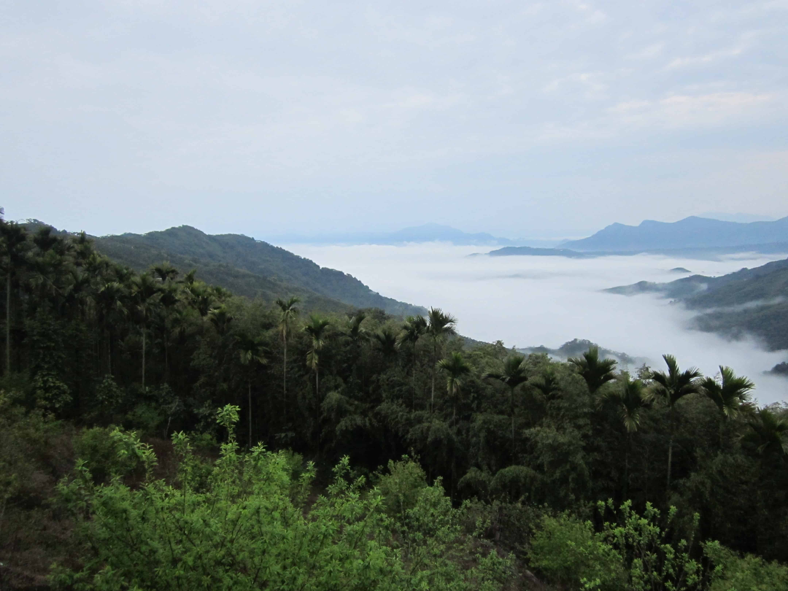
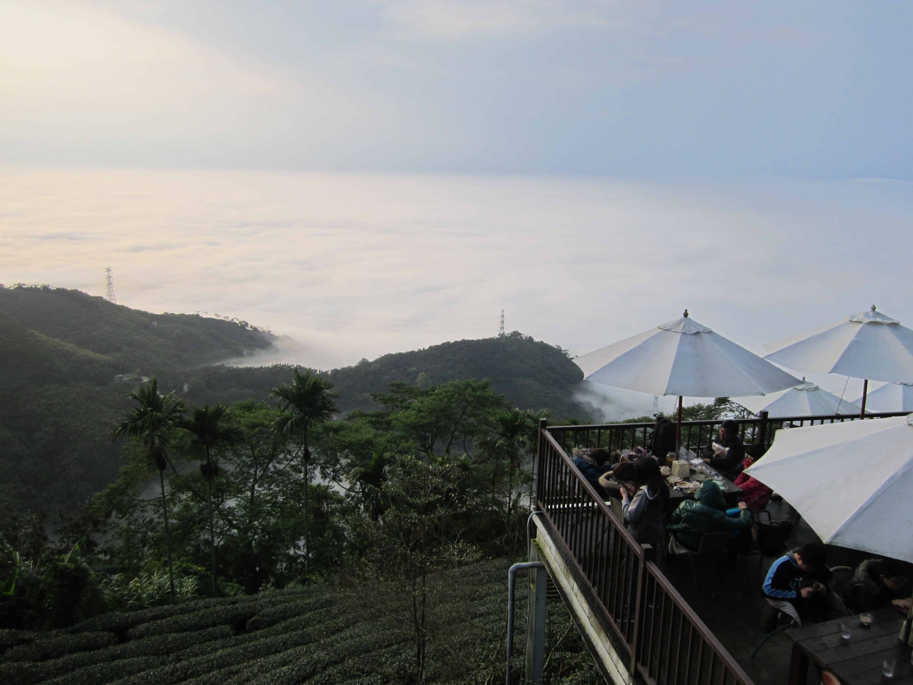
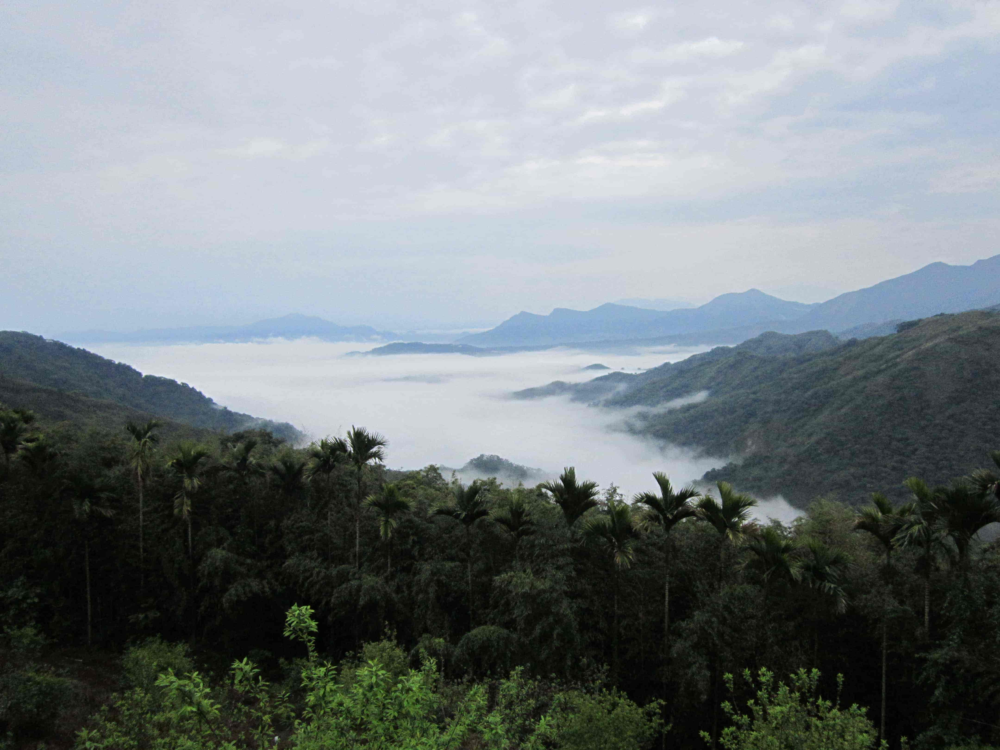
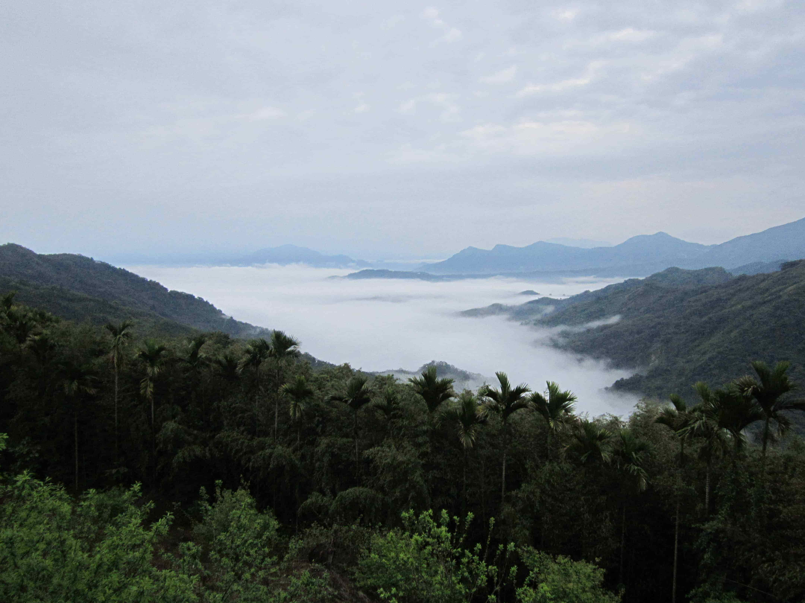
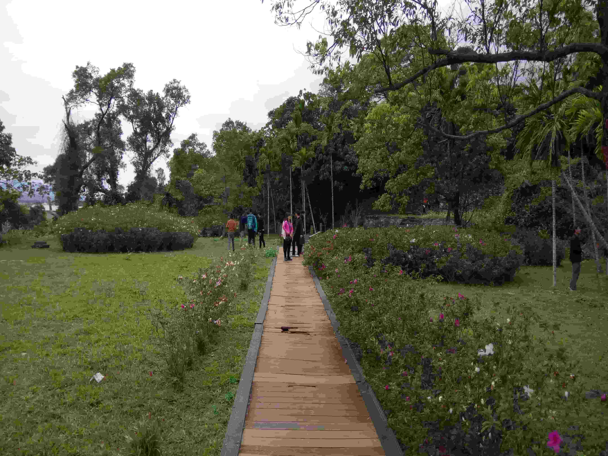

|  |
|

天子寢宮：住你千遍也不厭倦 
宰相寢宮：鄉下六十秒快樂一整天 
尚書寢宮：隱世之地唯我獨尊 元帥寢宮：享受發呆發呆享受 |
|
將軍寢宮：聽說花蓮比日本遠 主席寢宮：來趟時光之旅吧 
首相寢宮：發呆還遠遠不夠 狀元寢宮：這裡時間多得很 |
| 點我 點我 |
聯絡人：鍾媽媽 電 話：0910-552579 地 址：花蓮縣玉里鎮樂合里新民31號 地圖另開 網 頁：https://www.jinxuanhua.com.tw 網頁另開 Copyright©[2025][Troy Chung].All rights reserved. |